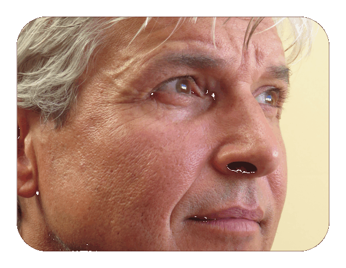

Mindfulness op een heel hoog niveau. Als je de volgende stap wilt maken, doe het dan hier!
Sandra - mindfulness trainer
Wat een heerlijke plek om te mediteren! En wat een fijne leraar! Echt een aanrader! Dorien - jurist
Het wordt steeds rustiger en helderder, stress heeft steeds minder vat op me & het begint ook andere op te vallen dat ik 'n stuk relaxter en vriendelijker ben. Gerard - marketing director
Ik heb elke dag veel aan de lessen. Het helpt me om alles helder te krijgen - en te houden!. Dat geeft me de houvast die ik nodig als het werk zich opstapelt. Moniek - pedagoge
Goed dat je mijn patronen en valkuilen door hebt. Ik voel me een stuk vrijer en blijer en ik kom makkelijker tot rust. Johan - fysiotherapeut
Mindfulness op een heel hoog niveau. Als je de volgende stap wilt maken, doe het dan hier!
Sandra - mindfulness trainer
Wat een heerlijke plek om te mediteren! En wat een fijne leraar! Echt een aanrader! Dorien - jurist
Het wordt steeds rustiger en helderder, stress heeft steeds minder vat op me & het begint ook andere op te vallen dat ik 'n stuk relaxter en vriendelijker ben. Gerard - marketing director
Ik heb elke dag veel aan de lessen. Het helpt me om alles helder te krijgen - en te houden!. Dat geeft me de houvast die ik nodig als het werk zich opstapelt. Moniek - pedagoge
Goed dat je mijn patronen en valkuilen door hebt. Ik voel me een stuk vrijer en blijer en ik kom makkelijker tot rust. Johan - fysiotherapeut
 Ik ben erg blij dat het niet alleen heel inzichtelijk en duidelijk is, maar ook erg praktisch. Dat levert me veel goeds op. Eva - ondernemer
Eindelijk iemand die echt weet waar hij het over heeft! Waarom zijn er daar niet meer van? Irene - hr manager
Ik ben blij dat ik het weer opgepakt hebt. De lessen zijn diepgaand en verhelderend. Precies wat ik zocht. Arnoud - psycholoog
Mindfuness geeft mij de balans die ik in mijn drukke leven nodig heb. Adriaan - algemeen directeur
Het voelt erg goed om me verder in Mindfulness te verdiepen en het lukt me steeds beter het in mijn dagelijks leven toe te passen. Francien - technisch tekenaar
Fantastisch om iemand te ontmoeten met zo'n lange en diepgaande ervaring! Ik leer er erg veel van! Daniel - arts
Hahahaha! Het leven wordt steeds leuker! En dat zegt een oude chagarijn zoals ik... . Nooit gedacht dat ik het leven echt leuk zou gaan vinden! Bernard - chefkok
Ik heb veel te lang met boekenkennis rondgelopen, zonde van de tijd. Gelukkig heb ik de stap gezet om met jou echt aan de slag te gaan. Thomas - hoogleraar
Het voelt steeds natuurlijker om bewust te leven. Ik ben blij dat ik het weer opgepakt heb, dat voelt goed en levert me veel op. Serge - accountant
Bedankt voor je inzichten, echt fantastsich! Simone - hr adviseur
De handvatten die je me hebt gegeven zijn heel effectief. Ik pak dingen nu anders aan; het lijkt alsof ik een stukje wijzer geworden ben... . Rene - ondernemer
Ik voel me eindelijk weer fit en vitaal. Wat is het heerlijk om weer energie te hebben en bewust in het leven te staan. ! Harold - manager
Dank zij jou laat ik me niet meer gek maken. M'n gezondheid is een stuk belangrijker dan de waan van de dag. Door jouw tips heeft stress steeds minder grip op me en daar heeft mijn hele gezin baat bij. Conrad - filiaalmanager
Leuk om steeds wat wijzer te worden! Dat bevalt erg goed! Jose - teamleider
Fijn dat er een plek in de buurt is waar je goed ondericht kunt krijgen. Gerard - consultant
Knap wat je doet! Sandra - salesmanager
Ik ben erg blij dat het niet alleen heel inzichtelijk en duidelijk is, maar ook erg praktisch. Dat levert me veel goeds op. Eva - ondernemer
Eindelijk iemand die echt weet waar hij het over heeft! Waarom zijn er daar niet meer van? Irene - hr manager
Ik ben blij dat ik het weer opgepakt hebt. De lessen zijn diepgaand en verhelderend. Precies wat ik zocht. Arnoud - psycholoog
Mindfuness geeft mij de balans die ik in mijn drukke leven nodig heb. Adriaan - algemeen directeur
Het voelt erg goed om me verder in Mindfulness te verdiepen en het lukt me steeds beter het in mijn dagelijks leven toe te passen. Francien - technisch tekenaar
Fantastisch om iemand te ontmoeten met zo'n lange en diepgaande ervaring! Ik leer er erg veel van! Daniel - arts
Hahahaha! Het leven wordt steeds leuker! En dat zegt een oude chagarijn zoals ik... . Nooit gedacht dat ik het leven echt leuk zou gaan vinden! Bernard - chefkok
Ik heb veel te lang met boekenkennis rondgelopen, zonde van de tijd. Gelukkig heb ik de stap gezet om met jou echt aan de slag te gaan. Thomas - hoogleraar
Het voelt steeds natuurlijker om bewust te leven. Ik ben blij dat ik het weer opgepakt heb, dat voelt goed en levert me veel op. Serge - accountant
Bedankt voor je inzichten, echt fantastsich! Simone - hr adviseur
De handvatten die je me hebt gegeven zijn heel effectief. Ik pak dingen nu anders aan; het lijkt alsof ik een stukje wijzer geworden ben... . Rene - ondernemer
Ik voel me eindelijk weer fit en vitaal. Wat is het heerlijk om weer energie te hebben en bewust in het leven te staan. ! Harold - manager
Dank zij jou laat ik me niet meer gek maken. M'n gezondheid is een stuk belangrijker dan de waan van de dag. Door jouw tips heeft stress steeds minder grip op me en daar heeft mijn hele gezin baat bij. Conrad - filiaalmanager
Leuk om steeds wat wijzer te worden! Dat bevalt erg goed! Jose - teamleider
Fijn dat er een plek in de buurt is waar je goed ondericht kunt krijgen. Gerard - consultant
Knap wat je doet! Sandra - salesmanager

Welkom bij Mindfulness Haarlem
Mindfulness Haarlem is gevestigd in een ruime benedenetage aan de rand van het centrum in Haarlem Zuid. Je kunt je hier in alle rust verder in
mindfulness & meditatie verdiepen. Het centrum is opgezet om je de gelegenheid te geven mindfulness & meditatie
je werkelijk eigen te maken, zodat je het in je dagelijkse leven weet te integreren.
Mindfulness & meditatie kun je op vele niveaus beoefenen, van ontspanningscursus tot zelfrealisatie. Op welk
niveau je het nu ook beoefent, je bent welkom bij Mindfulness Haarlem om de volgende stap
te nemen. In een ongedwongen sfeer kun je mindfulness & meditatie in jouw tempo je eigen wijsheid maken.

The next level is een diepgaande vervolgcursus Mindfulness & Meditatie. De cursus is bedoeld voor iedereen die zich verder wil verdiepen in Mindfulness & wordt
met begrip, humor & compassie gegeven door een
leraar die meer dan 30 jaar diepgaande ervaring heeft met mindfulness & meditatie.
Het zijn ontspannen bijeenkomsten die bestaan uit heldere, diepgaande & praktische inzichten & oefeningen.
De lessen helpen je om steeds meer te zijn wie je bent & je oude ballast van patronen, identificaties, beperkingen &
problemen los te laten. Mindfulness & meditatie vergroot je bewustzijn & verrijkt je leven. Als je
het eenmaal onder de knie hebt zul je merken dat het heel verhelderend is - en erg fijn om te doen.
Email: info@mindfulnesshaarlem.org
Tel: 0644 771775
- Inzicht met humor & compassie
- Helder, diepgaand & praktisch
- Doorgrond jezelf en het leven
- Vind een diepere vrede & vervulling
- Doorzie je illusies & verlangens
- Ontmasker je identificaties
- Realiseer je oorspronkelijke natuur